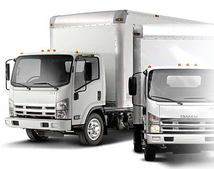

Compact Lacoli

Compact Lacoli este o societate comerciala care a fost infiintata in anul 1991, iar activitatea de transport a inceput sa se
desfasoare in anul 2000. Experienta de 15 ani in domeniul transportului international de marfa, flota de 75 de camioane, cei
105 angajati, cat si cifra de afaceri de peste 6.7 milioane de euro ne recomanda ca fiind o companie serioasa, care a dezvoltat
parteneriate de durata, oferind cele mai bune servicii de transport prin punctualitate, siguranta, promptitudine, profesionalism
si seriozitate.
Operam cu punctualitate din anul 2007 curse regulate zilnice intre Germania-Spania si Germania-Franta, cu un orar fix de incarcare
si descarcare.
Societatea dispune de un sistem informatic integrat de management financiar si logistic.
Urmarim si gestionam eficient flota prin sisteme GPS/GSM/GPRS. Oferim clientilor posibilitatea de a consulta pozitia camioanelor
angajate direct prin sistemul de tracking GPS. Pentru siguranta marfii transportate avem asigurare CMR.


 0040 248 216970
0040 248 216970
 office@compactlacoli.ro
office@compactlacoli.ro